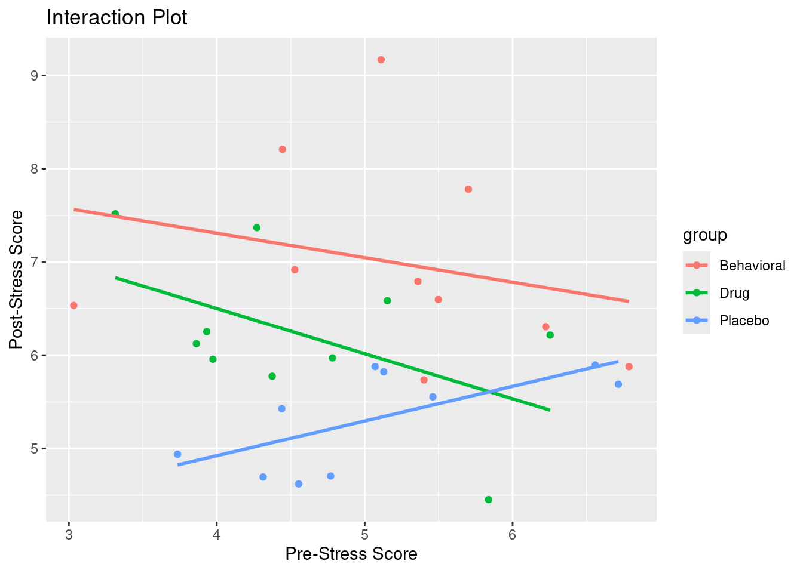
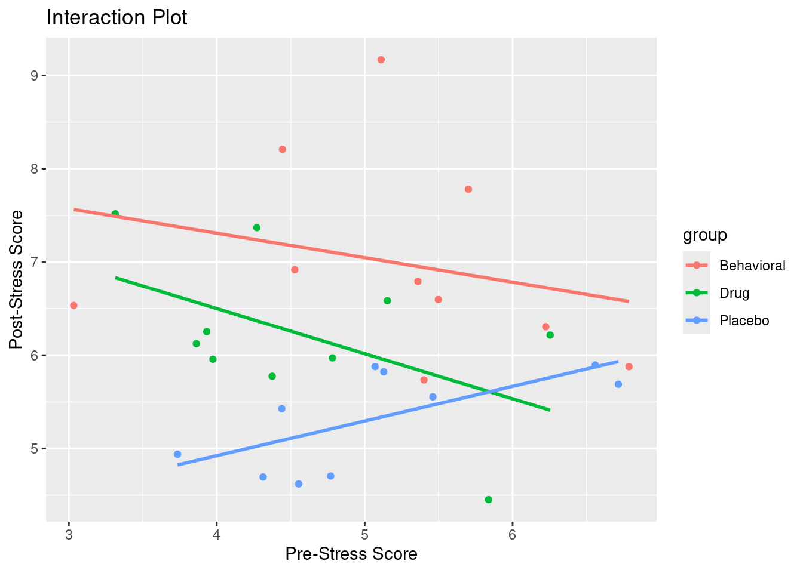

Warning: package 'ggplot2' was built under R version 4.5.2
Dr. Joshua Lambert
Download R Code for this Lecture
Analysis of Covariance (ANCOVA) is a statistical method that combines ANOVA and regression. It assesses the main and interaction effects of categorical variables on a continuous outcome while controlling for the influence of one or more continuous covariates.
Visualizing ANCOVA often involves making line plots to show the trajectory of the independent variable (x-axis) and dependent variable (y-axis) by group (color). One of the assumptions of an ANCOVA is “Homogeneity of regression slopes between groups”. As we can see in this graph, there doesn’t seem to be graphical evidence for that. Use scatter plots to visualize the relationship between the predictor and outcome variables. For more on creating these visualizations in R, see the Graphing Your Data lecture.
Warning: package 'ggplot2' was built under R version 4.5.2
As we can see here, this example shows slopes that are much more similar. Thats good because if we are going to use ANCOVA, we are assuming they are the same or atleast very similar.
# Example visualization in R
library(ggplot2)
data <- data.frame(
group = rep(c("Placebo", "Behavioral", "Drug"), each = 10),
pre_stress = rnorm(30, 5, 1),
post_stress = c(rnorm(10, 5, 1), rnorm(10, 7, 1), rnorm(10, 6, 1))
)
# Interaction plot
ggplot(data, aes(x = pre_stress, y = post_stress, color = group)) +
geom_point() +
geom_smooth(method = "lm", se = FALSE) +
labs(title = "Interaction Plot", x = "Pre-Stress Score", y = "Post-Stress Score")Adjusted means, or least-squares means, are averages that account for the influence of covariates. They are particularly useful in analyses like ANCOVA to provide unbiased comparisons across groups by removing the effects of nuisance variables. This adjustment ensures that the differences between groups reflect the effect of the primary variables of interest, not the covariates. Thus, adjusted means enable a fair comparison of group differences after controlling for external influences.
Testing main effects reveals the individual impact of each independent and covariate variable on the outcome. Investigating interaction effects uncovers how combinations of these variables jointly influence the outcome. Together, they provide a comprehensive understanding of the relationships within the data, guiding more accurate interpretations and conclusions about our ANCOVA result.
---
title: "Introduction to ANCOVA"
author: "Dr. Joshua Lambert"
output: html
format:
html:
toc: true
toc-title: "Table of Contents"
code-fold: false
code-tools: true
---
[**Download R Code for this Lecture**](code/introduction-to-ancova.R){ .btn .btn-primary }
# Understanding Hypothesis Testing and ANCOVA
### Definition and Purpose of ANCOVA
Analysis of Covariance (ANCOVA) is a statistical method that combines [ANOVA](introduction-to-anova.qmd) and regression. It assesses the main and interaction effects of categorical variables on a continuous outcome while controlling for the influence of one or more continuous covariates.
### Key Differences Between ANCOVA and ANOVA
1. **ANOVA** examines differences in means between groups without adjusting for other variables.
2. **ANCOVA** adjusts group means to account for the effect of covariates.
### Assumptions of ANCOVA
1. The dependent variable is measured on an interval or ratio scale.
2. The independent variable is categorical.
3. Covariates are measured on an interval or ratio scale.
4. Random sampling.
5. Normal distribution of the dependent variable.
6. Homogeneity of variance.
7. Homogeneity of regression slopes between groups.
### Independent Variables and Covariates
- **Independent Variables:** Categorical factors of interest.
- **Covariates:** Continuous variables used to adjust the dependent variable.
### Visualizing ANCOVA
Visualizing ANCOVA often involves making line plots to show the trajectory of the independent variable (x-axis) and dependent variable (y-axis) by group (color). One of the assumptions of an ANCOVA is "Homogeneity of regression slopes between groups". As we can see in this graph, there doesn't seem to be graphical evidence for that. Use scatter plots to visualize the relationship between the predictor
and outcome variables. For more on creating these visualizations in R, see the [Graphing Your Data](graphing-your-data.qmd) lecture.
```{r, echo=FALSE, message=FALSE}
# Example visualization in R
library(ggplot2)
set.seed(123)
data <- data.frame(
group = rep(c("Placebo", "Behavioral", "Drug"), each = 10),
pre_stress = rnorm(30, 5, 1),
post_stress = c(rnorm(10, 5, 1), rnorm(10, 7, 1), rnorm(10, 6, 1))
)
# Interaction plot
ggplot(data, aes(x = pre_stress, y = post_stress, color = group)) +
geom_point() +
geom_smooth(method = "lm", se = FALSE) +
labs(title = "Interaction Plot", x = "Pre-Stress Score", y = "Post-Stress Score")
```
As we can see here, this example shows slopes that are much more similar. Thats good because if we are going to use ANCOVA, we are assuming they are the *same* or atleast very similar.
```{r, echo=FALSE, message=FALSE}
# Example visualization in R with same slopes
library(ggplot2)
set.seed(123)
# Generate pre_stress values
pre_stress <- rnorm(30, 5, 1)
# Common linear equation for all groups
common_slope <- 0.8 # Choose a common slope
intercept <- 1 # Choose a common intercept
# Calculate post_stress using the common linear equation
post_stress <- pre_stress * common_slope + intercept + rnorm(30, 0, 1)
# Create the data frame
data <- data.frame(
group = rep(c("Placebo", "Behavioral", "Drug"), each = 10),
pre_stress = pre_stress,
post_stress = post_stress
)
# Interaction plot with same slopes
ggplot(data, aes(x = pre_stress, y = post_stress, color = group)) +
geom_point() +
geom_smooth(method = "lm", se = FALSE) +
labs(title = "Interaction Plot with Same Slopes", x = "Pre-Stress Score", y = "Post-Stress Score")
```
```{r, eval=FALSE}
# Example visualization in R
library(ggplot2)
data <- data.frame(
group = rep(c("Placebo", "Behavioral", "Drug"), each = 10),
pre_stress = rnorm(30, 5, 1),
post_stress = c(rnorm(10, 5, 1), rnorm(10, 7, 1), rnorm(10, 6, 1))
)
# Interaction plot
ggplot(data, aes(x = pre_stress, y = post_stress, color = group)) +
geom_point() +
geom_smooth(method = "lm", se = FALSE) +
labs(title = "Interaction Plot", x = "Pre-Stress Score", y = "Post-Stress Score")
```
### Calculation of Adjusted Means
Adjusted means, or least-squares means, are averages that account for the influence of covariates. They are particularly useful in analyses like ANCOVA to provide unbiased comparisons across groups by removing the effects of nuisance variables. This adjustment ensures that the differences between groups reflect the effect of the primary variables of interest, not the covariates. Thus, adjusted means enable a fair comparison of group differences after controlling for external influences.
```{r, eval=FALSE}
# Adjusted means in R
library(car)
model <- lm(post_stress ~ group + pre_stress, data = data)
Anova(model, type = 3)
lsmeans <- emmeans::emmeans(model, "group")
print(lsmeans)
```
### Testing Main Effects and Investigating the Interaction
Testing main effects reveals the individual impact of each independent and covariate variable on the outcome. Investigating interaction effects uncovers how combinations of these variables jointly influence the outcome. Together, they provide a comprehensive understanding of the relationships within the data, guiding more accurate interpretations and conclusions about our ANCOVA result.
1. **Main Effects:** The impact of each independent and covariate variable on the outcome.
2. **Interaction Effects:** How combinations of independent and covariate variables influence the outcome.
```{r, eval=FALSE}
# Testing main effects and interaction in R
model <- lm(post_stress ~ group * pre_stress, data = data)
Anova(model, type = 3)
```
### Effect Sizes and Significance, F Test, SSC, SSB, SSW, P-value
- **F Test:** Determines if group means are significantly different.
- **SSB (Sum of Squares Between):** Measures variation between groups.
- **SSC (Sum of Squares Covariate):** Measures the variation explained by the covariate.
- **SSW (Sum of Squares Within):** Measures variation within groups.
- **P-value:** Indicates statistical significance.
```{r, eval=FALSE}
# Effect sizes and significance in R
model <- lm(post_stress ~ group + pre_stress, data = data)
Anova(model, type = 3)
```
### Examples of ANCOVA in Nursing Research
1. **Patient Recovery Rates:** Comparing patient recovery rates across different treatment groups while controlling for age and baseline health status.
2. **Stress Reduction Programs:** Evaluating the effectiveness of stress reduction programs while controlling for initial stress levels.
### Hands-on Example: Interpreting Your Results
<a href="ancova_ex1.csv" download>download ex. 1 data (CSV)</a>
```{r, eval=FALSE}
# Example ANCOVA in R
model <- lm(post_stress ~ group + pre_stress, data = data)
summary(model)
Anova(model, type = 3)
```